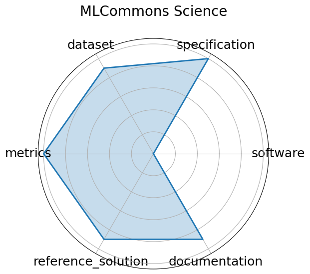

Date: 2023-06-01
Name: MLCommons Science
Domain: Earthquake, Satellite Image, Drug Discovery, Electron Microscope, CFD
Focus: AI benchmarks for scientific applications including time-series, imaging, and simulation
Keywords: science AI, benchmark, MLCommons, HPC
Task Types: Time-series analysis, Image classification, Simulation surrogate modeling
Metrics: MAE, Accuracy, Speedup vs simulation
Models: CNN, GNN, Transformer
Citation:
Jeyan Thiyagalingam, Gregor von Laszewski, Junqi Yin, Murali Emani, Juri Papay, Gregg Barrett, Piotr Luszczek, Aristeidis Tsaris, Christine Kirkpatrick, Feiyi Wang, Tom Gibbs, Venkatram Vishwanath, Mallikarjun Shankar, Geoffrey Fox, and Tony Hey. Ai benchmarking for science: efforts from the mlcommons science working group. In Hartwig Anzt, Amanda Bienz, Piotr Luszczek, and Marc Baboulin, editors, High Performance Computing. ISC High Performance 2022 International Workshops, 47–64. Cham, 2022. Springer International Publishing.
bibtex: ``` @InProceedings{10.1007/978-3-031-23220-6_4,
author="Thiyagalingam, Jeyan
and von Laszewski, Gregor
and Yin, Junqi
and Emani, Murali
and Papay, Juri
and Barrett, Gregg
and Luszczek, Piotr
and Tsaris, Aristeidis
and Kirkpatrick, Christine
and Wang, Feiyi
and Gibbs, Tom
and Vishwanath, Venkatram
and Shankar, Mallikarjun
and Fox, Geoffrey
and Hey, Tony",
editor="Anzt, Hartwig
and Bienz, Amanda
and Luszczek, Piotr
and Baboulin, Marc",
title="AI Benchmarking for Science: Efforts from the MLCommons Science Working Group",
booktitle="High Performance Computing. ISC High Performance 2022 International Workshops",
year="2022",
publisher="Springer International Publishing",
address="Cham",
pages="47--64",
abstract="With machine learning (ML) becoming a transformative tool for science, the scientific community needs a clear catalogue of ML techniques, and their relative benefits on various scientific problems, if they were to make significant advances in science using AI. Although this comes under the purview of benchmarking, conventional benchmarking initiatives are focused on performance, and as such, science, often becomes a secondary criteria.",
isbn="978-3-031-23220-6"}
```
Ratings:
Software:
Rating: 5
Reason: Actively maintained GitHub repository available at https://github.com/mlcommons/science with implementations, scripts, and reproducibility support.
Specification:
Rating: 5
Reason: All five specification aspects are covered: system constraints, task, dataset format, benchmark inputs, and outputs.
Dataset:
Rating: 5
Reason: Public scientific datasets are used with defined splits. At least 4 FAIR principles are followed.
Metrics:
Rating: 5
Reason: Clearly defined metrics such as accuracy, training time, and GPU utilization are used. These metrics are explained and effectively capture solution performance.
Reference Solution:
Rating: 5
Reason: A reference implementation is available, well-documented, trainable/open, and includes full metric evaluation and software/hardware details.
Documentation:
Rating: 5
Reason: Thorough documentation exists covering the task, background, motivation, evaluation criteria, and includes a supporting paper.
Average Rating: 5.0
Radar Plot: 